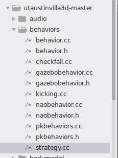
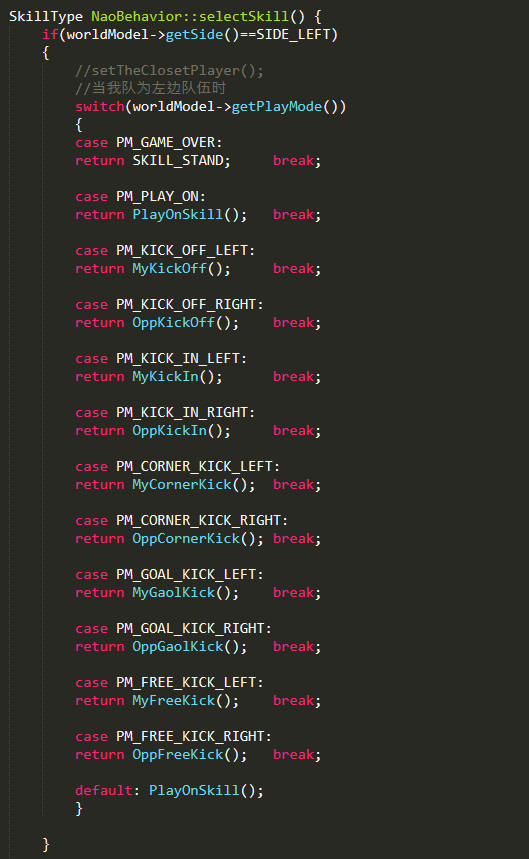
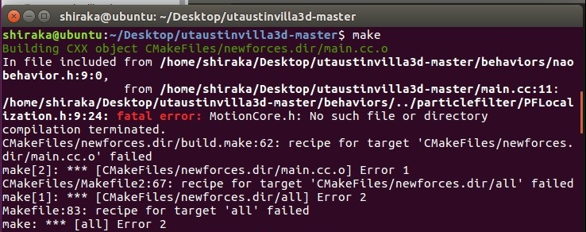
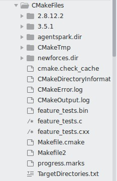
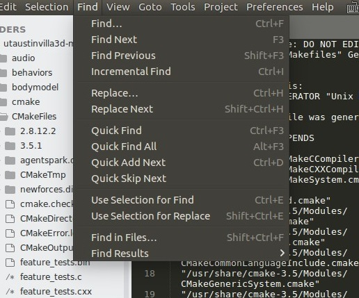
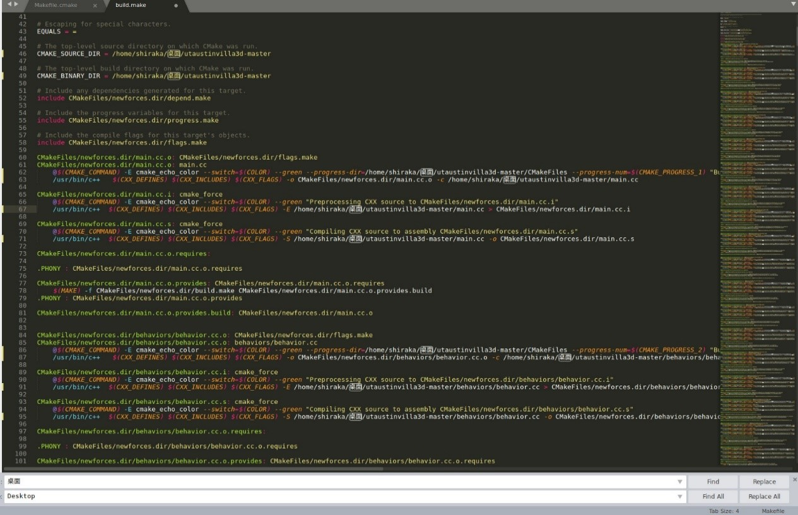
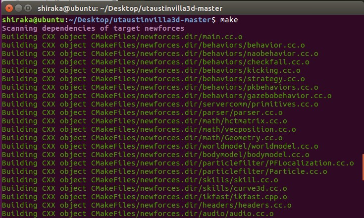
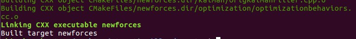

装好了Robocup 3D比赛平台后，就要开始着手编写球队策略代码了。
我们使用的是utaustinvilla的Robocup 3D球队代码，球队的体态运动等都已经是别人写好的，我们暂时不要研究。
在下图中，behaviors文件夹下的strategy.cc文件，就是我们需要编写策略代码的部分。

球队上场阶段的函数，这一部分代码来确定球队如何上场，最开始的上场的站位在这里编写。通过if语句判断球员编号，根据球员编号返回(x坐标,y坐标,面向角度)。
这里正好提一下，球场是一个30*20的绿茵场，以中心为坐标原点。满足x∈[-15,15]，y∈[-10，10]。
球队上场后，按下K键开球。之后球队就会开始执行这一段函数，这一部分函数是我们目前主要要编写部分。你们目前看到的这部一部分函数是学长上次比赛写的，其中部分代码有英文注释。之后我会另写一篇blog，对这一部分代码详细注释。
比赛的正常流程下有许多比赛状态，大概流程如下：
| 比赛状态 | 函数 |
|---|---|
| 上场 | beam() |
| 开球 | MyKickOff()、OppKickOff() |
| 通常 | PlayOnSkill() |
| 罚球 | KickIn、CornerKick、GaolKick、FreeKick |
所有策略函数注释如下
/* 正常比赛 */
void beam(); //球队上场
SkillType MyKickOff(); //我方开球
SkillType OppKickOff(); //对方开球
SkillType PlayOnSkill(); //常规策略
/* 罚球函数 */
SkillType MyKickIn(); //我方界外球
SkillType OppKickIn(); //对方界外球
SkillType MyCornerKick(); //我方角球
SkillType OppCornerKick(); //对方角球
SkillType MyGaolKick(); //我方球门球
SkillType OppGaolKick(); //对方球门球
SkillType MyFreeKick(); //我方任意球
SkillType OppFreeKick(); //对方任意球注意在下图的代码中有一段selectSkill()函数，是这段函数将比赛阶段与对应的策略函数对应。例如，worldModel->getPlayMode()== PM_PLAY_ON时，返回return PlayOnSkill()函数。

比赛开始，先是阶段执行beam()，然后开球极阶段执行MyKickOff()或者OppKickOff()，球离开中圈后进入策略阶段执行playOnSkill()。当满足界外球、角球、球门球的情况下，执行相应函数。（对这三种情况不了解的可自行百度。）
这里要注意的是，我们从学长那里拿到代码是不能直接make的。
我们打开终端，cd到球队代码目录下(utaustinvilla3d-master)，输入make指令进行编译。第一次你可能会看到如下报错结果：
因为这是从学长电脑拷贝给你们的，你们这个文件的目录和学长文件目录可能不一样。就算同样是放在桌面，如果是中文系统就是/home/用户名/桌面，英文就是/home/用户名/Desktop，而且我们用户名肯定也不一样。所以目录基本上是一定不一样。
那就必须改目录！

CMakeFiles下面有很多文件里都存储有项目的目录，为了能运行，都要修改。主要是要修改CMakeFiles/newforces.dir/下面的文件，然后退回到CMakeFile一级，还有一两个文件需要修改。

修改时利用sublime编辑器，上面的find-Replace进行全部替换。

这张图中，我将所有的 桌面 一键替换成了 Desktop。那么你的用户名也和我不一样，那你们就应该是 Shiraka/桌面替换成你的用户名/Desktop。确保替换后，和你的目录一致就行了。
最后成功运行如下图：


如果不一样，依旧报错，说明还是有地方没改。再仔细检查一下CMakeFile下有没有漏网之鱼。